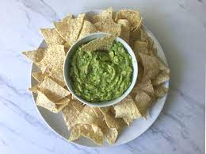
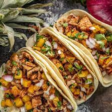

The New World
Appetizer

Tortilla Chips and Guacamole
Ingredients: Avacado, Tortilla Chips
Description: Tortilla chips and guacamole have roots in Mexican cuisine and have become popular around the world. The origin of tortilla chips can be traced back to Mexico, where they were likely created as a way to use up stale tortillas. Over time, they became a popular snack food and started to spread to other parts of the world, particularly in the United States, as Mexican cuisine gained popularity.
Guacamole is a traditional Mexican dip made from mashed avocados, lime juice, and spices. It is believed to have originated in Mexico over 2,000 years ago and was a staple food of the Aztecs and other indigenous peoples of the region. The ingredients for guacamole spread from Mexico to other parts of the world as Mexican cuisine became more widely known and appreciated.
Both tortilla chips and guacamole share similarities with other dishes from around the world. For example, tortilla chips are similar to other types of chips and crackers, while guacamole is similar to other avocado-based dips, such as Lebanese and Israeli dips.
Tortilla chips and guacamole have had a significant impact on cuisine in their region of the world, as well as on the world as a whole. They have become popular around the world and are now widely available in grocery stores, restaurants, and at casual gatherings and parties. The popularity of Mexican cuisine, and in particular tortilla chips and guacamole, has also helped to spread awareness of other traditional Mexican dishes and ingredients, contributing to the growth and appreciation of Mexican cuisine on a global scale.
Main Course

Tacos al Pastor
Ingredients: Turkey(The traditional recipie uses pork but nowadays it is maily substituted for pork), Corn Tortillas, Pinapples, Onions, Cilantro, Lime
Description: aco al Pastor is a traditional Mexican dish that is believed to have originated from Lebanese immigrants to Mexico in the early 20th century. These immigrants brought with them the tradition of cooking meats on a spit, similar to shawarma, and adapted the technique to the ingredients available in Mexico.
The dish was developed in Mexico and quickly became popular among the Mexican population, particularly in street food culture. The combination of marinated Turkey, pineapple, cilantro, and spices, as well as the method of cooking on a spit, are unique to the dish and distinguish it from other Mexican tacos.
However, it is said to share similarities with the shawarma of Middle Eastern cuisine and the gyro of Greek cuisine, both of which also involve spit-roasted meat. The use of pineapple, in particular, sets al Pastor apart and is a nod to the dish's Mexican roots.
The impact of taco al Pastor on Mexican cuisine has been significant. It has become one of Mexico's most famous and beloved dishes, enjoyed both in Mexico and around the world. Its popularity has also helped to spread awareness of Mexican cuisine and has contributed to the recognition of Mexican food as a distinct and diverse culinary tradition.
On the world as a whole, taco al Pastor has become a symbol of Mexican culture and cuisine, and its popularity has helped to spread the flavors and ingredients of Mexico to other parts of the world. The dish has been adopted and adapted by many different cultures, with variations appearing in different parts of the world. This has helped to spread the popularity of Mexican cuisine and has had a lasting impact on the global food scene.
Desert
Sweet Potato Pie
Ingredients: Sweet Potatoes, Vanilla Extract, Eggs, Milk
Description: Sweet potato pie is a traditional dessert that has its roots in Southern cuisine in the United States and is made with only ingredients from the New World. The main ingredient, sweet potatoes, is native to the Americas and was unknown in Europe prior to Columbus' voyage. Sugar and spices, such as cinnamon and nutmeg, were introduced to the Americas as a result of the Columbian Exchange.
Sweet potato pie was developed as a way to make use of the plentiful sweet potatoes that were grown in the Southern United States and as a way to stretch limited ingredients such as sugar, butter, and eggs. The dish is similar to pumpkin pie, but with sweet potatoes as the main ingredient, giving it a distinct flavor and a slightly sweeter taste.
The popularity of sweet potato pie can be attributed to its unique flavor, versatility as a dessert or side dish, and cultural significance, particularly in the Southern United States where it is often served during holidays and special occasions. The dish has had a significant impact on the cuisine in its region, where sweet potatoes are now a staple ingredient in many traditional dishes. On a global scale, sweet potato pie has become a beloved dessert that is enjoyed by people all over the world, further highlighting the influence of New World ingredients on the world's cuisine.tas